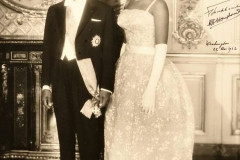
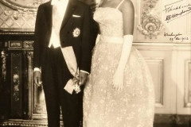
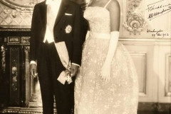

Source Fondation Félix Houphouët-Boigny et Wikipedia
 


Félix Houphouët-Boigny naît le 18 octobre 1905 à N'Gokro. Originaire d'un petit royaume akouè polythéiste, il est le fils d'un dénommé Houphouët4 qui lui donne à l’origine comme prénom Dia, pouvant signifier dans sa langue, « prophète » ou « magicien ». Le nom de son père provient du baoulé. Ce nom expiatoire est donné aux enfants nés aux abords d'un village ou dans une famille où plusieurs enfants sont morts successivement avant sa naissance. De son nom d'origine Dia Houphouët,il y ajoute postérieurement le nom Boigny signifiant « le bélier » en baoulé.
Félix Houphouët-Boigny est issu d'une famille traditionnelle baoulé. Formé selon les principes de l'éducation africaine traditionnelle, il suit cependant le cursus des écoles du gouvernement général de L'Afrique occidentale française (AOF). Médecin africain, il exercera son métier pendant trois lustres avant de faire son entrée en politique. On peut, à partir de trois angles de vues, appréhender l'homme tout court d'abord, l'homme politique ensuite, l'homme de foi enfin. L'homme, par ses qualités, par sa formation, par sa philosophie de l'existence a préparé le politique à l'exercice des hautes responsabilités qui, elles-mêmes, trouvent leur accomplissement et leurs fins dans la transcendance. La cohérence et la constance des convictions et des certitudes, des choix et des actes de Félix Houphouët-Boigny révèlent cette triple dimension d'un destin hors du commun.
Brillant élève, il intègre, en 1919, l’École normale William-Ponty où il obtient son diplôme d’instituteur6 et enchaîne, en 1921, avec l’École de médecine de l'Afrique-Occidentale française dont il sort major[pas clair] en 1925. Ces études de médecine étant enseignées de manière incomplète par le colonisateur, Houphouët ne peut prétendre qu'à la carrière d'un « médecin africain », médecin au rabais.
Revenu de Dakar le 21 novembre 1925 avec le diplôme de "médecin auxiliaire", titre officiel des médecins africains en AOF, Félix Houphouët exercera pendant trois lustres sa profession.Privilège de major de promotion sans doute, il est affecté dans son propre pays – la pratique étant de faire servir les fonctionnaires à n'importe quel endroit de l'Afrique noire française – et qui plus est, dans la ville d'Abidjan, certes modeste bourgade en ces années vingt, mais mieux pourvue que les centres urbains de l'intérieur.
A Dimbokro, Félix Houphouët fait l'unanimité sur sa valeur professionnelle. Un rapport du 6 septembre 1936 le décrit en ces termes : "Sa puissance de travail est considérable. Le chiffre de ses consultations a crû dans des proportions énormes. Son dévouement à ses fonctions est inlassable, sa bourse toujours ouverte aux déshérités et aux nécessiteux." Le médecin s'occupe aussi de médecine sociale et d'éducation politique selon Mamadou Coulibaly.
Félix Houphouët passe deux années à l'hôpital d'Abidjan de novembre 1925 à avril 1927. Enfin Toumodi, subdivision administrative dont dépend le village de Yamoussoukro, est son dernier poste de médecin. Il y sert de 1936 à 1939. De là il fait des séjours plus fréquents dans son village pour visiter les siens et suivre l'évolution de ses plantations
Par arrêté n°1896 du 8 juin 1939 du gouverneur général de l'AOF Mondon : "M. Houphouët Félix, médecin auxiliaire de première classe est mis en service détaché dans la position de congé hors-cadre, en vue de sa nomination à la chefferie des Akoués (cercle de Dimbokro)."
En devenant chef, Houphouët devient l'administrateur du canton d’Akouè,représentant trente-six villages. Il reprend également en charge la plantation familiale qui est alors l'une des plus importantes du pays, et parvient à la développer en diversifiant les cultures de caoutchouc, de cacao et de café ; il devient ainsi un des plus riches planteurs africains.
Le 3 septembre 1944, dans le bar-dancing l'Etoile du sud, il crée le Syndicat agricole (SAA), en accord avec l’administration coloniale, dont il devient le président. Regroupant les planteurs africains mécontents de leur sort, le SAA, anticolonialiste et antiraciste, réclame de meilleures conditions de travail, une hausse des salaires et l’abolition du travail forcé. Ce syndicat rencontre rapidement le succès et reçoit l’appui de près de 20 000 planteurs, ce qui déplait fortement aux colons qui vont jusqu'à porter plainte contre Houphouët. L’écho de ce syndicat est tel qu’il se rend, au début de 1945, à Dakar pour expliquer la démarche du SAA à Pierre Cournarie, gouverneur général de l’AOF.
En octobre 1945, Houphouët est projeté sur la scène politique ; le gouvernement français, décidé à faire participer ses colonies à l’assemblée constituante, organise l’élection de deux députés en Côte d’Ivoire : l’un représentant les colons, l’autre les autochtones. Houphouët se présente et, grâce aux nombreux soutiens qu’il a acquis par son action syndicale.
À l'Assemblée nationale, Houphouët-Boigny est nommé membre de la Commission des territoires d'outre-mer. Il s'attelle à mettre en application les revendications du SAA. Un projet de loi tendant à la suppression du travail forcé est ainsi adopté par l’Assemblée le 11 avril 1946 sous le nom de loi Houphouët-Boigny. Le 3 avril 1946, il propose d’unifier la réglementation du travail dans les territoires d'Afrique ; ce sera chose faite en 1952. Enfin, le 27 septembre 1946, il dépose un rapport sur le système de santé des territoires d'outre-mer qu’il invite à réformer.
Houphouët-Boigny milite également en faveur de l’Union française. Ce projet qui prévoit d'ériger les colonies en des départements et territoires français, est loin de faire l’unanimité chez les parlementaires métropolitains qui craignent de voir la France devenir la colonie de ses colonies. Tentant de les rassurer, Houphouët-Boigny leur répond qu’il n’existe, « à l’heure actuelle », aucun risque pour que les Africains submergent les parlementaires européens, mais, qu’en revanche, une telle union permettrait de stopper la double politique menée par la France : l’une « métropolitaine et démocratique », l’autre « coloniale et réactionnaire ».
Après l’adoption de la constitution de la IVe République, il est réélu sans difficulté avec 21 099 voix sur 37 888 des suffrages exprimés. Toujours membre de la Commission des territoires d'outre-mer (dont il devient secrétaire en 1947 et 1948), il est nommé, en 1946, à la Commission du règlement et du suffrage universel. Le 18 février 1947, il propose de réformer en profondeur le système des conseils généraux des territoires de l'AOF, de l'AEF et du Conseil fédéral afin qu’ils soient plus représentatifs des populations autochtones.
Le Syndicat Agricole Africain fut la matrice dans laquelle s'est formé le Parti Démocratique de la Côte d'Ivoire (PDCI). Il a fourni la masse de ses adhérents, ses ressources matérielles et financières, ses structures organisationnelles. Mais le PDCI ne saurait être réduit à ce seul groupement et ses objectifs limités à la seule défense des intérêts corporatistes des planteurs.
Dès l'origine, le PDCI est, en effet, ouvert à toutes les races, à toutes les classes, à toutes les nationalités. Et certains qui prônent aujourd'hui un nationalisme étroit devraient savoir que cela ne correspond pas à notre tradition, à notre histoire politique, non plus qu'à la situation de notre pays, pays-carrefour, pays de rencontres destiné à être la cheville ouvrière de la nécessaire et inéluctable fédération africaine
Quant au programme, l'article 5 des premiers statuts du PDCI élaborés en 1946 précise : "Le Parti démocratique a pour mission de grouper les hommes et les femmes d'origine européenne et africaine luttant pour l'union des autochtones de la Côte d'Ivoire avec le peuple français, pour le progrès politique, économique et social des populations de ce pays suivant un programme de revendications démocratiques."
Ce programme sera enrichi, élargi par celui du RDA dont le PDCI devient une section après octobre 1946. Félix Houphouët par le PDCI a donné une base politique à son action qui était au départ syndicale.
Au congrès constitutif de Bamako, les Ivoiriens arrivent avec un parti de masse, le PDCI déjà constitué, un programme concis et précis, des hommes de qualité qui savent faire prévaloir l'intérêt de l'Afrique tout en ouvrant l'avenir. Félix Houphouët est de ceux-là . Et c'est donc logiquement qu'il est élu, à l'unanimité, président du Comité de coordination du Rassemblement Démocratique Africain ; qu'un autre Ivoirien, Fily Sissoko est élu secrétaire général et que le siège est fixé à Abidjan.Nous ne reprendrons pas la saga du RDA qui est connue.
A Bamako (du 18 au 21 octobre 1946), les débats les plus passionnés ont porté sur l'orientation politique à donner au mouvement. Fallait-il se prononcer pour l'indépendance comme objectif immédiat (à vrai dire très peu de délégués y pensaient, une telle revendication eût été irréaliste).
Le PCF, allié du RDA, n'était pas non plus pour l'indépendance. Le sens politique, le sens de la responsabilité commandaient de trouver un moyen terme, une formule qui préserve l'indépendance comme objectif à long terme tout en acceptant l'Union française. C'est ce point de vue que Félix Houphouët-Boigny fit triompher.
Ce programme sera enrichi, élargi par celui du RDA dont le PDCI devient une section après octobre 1946. Félix Houphouët par le PDCI a donné une base politique à son action qui était au départ syndicale.
L'expérience de la vie parlementaire et ministérielle en France a préparé Félix Houphouët-Boigny à l'exercice du pouvoir. Député de la Côte d'Ivoire de 1946 à 1956, il est également ministre dans six gouvernements de la République française. Ministre non pour inaugurer des chrysanthèmes comme le disent certains persifleurs mais pour défendre l'intérêt de l'Afrique et apprendre le métier d'homme d'État.
Houphouët-Boigny prend officiellement la tête du gouvernement ivoirien le 1er mai 1959. Il ne souffre d’aucune opposition en ce qui concerne les partis rivaux, le PDCI les ayant tous neutralisés en 1957 (devenant de facto unique), mais il est en revanche, confronté à une opposition interne. Des nationalistes radicaux, menés par Jean-Baptiste Mockey, se dressent ouvertement contre sa politique francophile26. Pour résoudre ce problème, Houphouët-Boigny décide de se débarrasser de cet opposant en fomentant, en septembre 1959, le « complot du chat noir » où Mockey, accusé d'avoir tenté de l'assassiner avec des fétiches maléfiques, est exilé.
En 1960, Houphouët-Boigny se lance dans la rédaction d'une nouvelle constitution. Il s’inspire de la constitution américaine qui établit un exécutif puissant, et de la constitution française de 1958 qui limite certains pouvoirs du législatif. Il transforme donc l’Assemblée nationale en une simple chambre d'enregistrement votant les lois et le budget ; les députés sont désignés directement par lui.
Source Fondation Félix Houphouët-Boigny et Wikipedia
